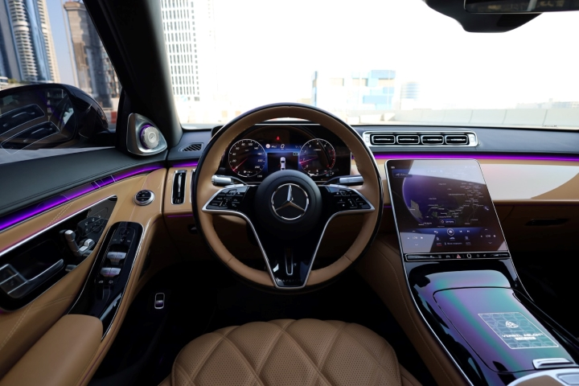

The Mercedes-Benz S-Class Maybach Virgil Abloh Edition is a limited-edition luxury vehicle created in collaboration with the late
fashion designer Virgil Abloh.
This bespoke Maybach S680 model features a striking two-tone black and sand color scheme,
both on the exterior and interior. The upper part of the car is finished in glossy Obsidian Black, while the lower part,
including the special forged rims, is painted in a sand hue.Mechanically, the car remains the same as the standard S680 model,
featuring a 6.0-liter V12 engine that produces 604 horsepower. Only 150 units of this limited-edition vehicle will be produced,
making it a rare and exclusive offering.

Inside, the car continues this theme with black and sand-colored Nappa leather adorning the four-seat configuration,
steering wheel, doors, lower dashboard, and headliner. The interior is further accentuated with sand-colored trims and high-pile floor mats with a sand
leather border. Special Virgil Abloh and Maybach logos are inscribed on the center console, headrests, door sills, and rear cushions.Additionally,
this collaboration includes a capsule clothing collection designed by Abloh and released alongside the car, available through Off-White™, Farfetch,
and Maybach Icons of Luxury online stores, as well as select Off-White™ stores.
The Virgil Abloh edition is part of the broader Project Maybach, which aimed to explore future luxury and electric design (Mercedes-Benz USA)
(The Drive) (Elite Traveler).
Dive into the MotorVault
Wise words from the author:
"Cars are not just transportation; they're an expression of freedom and a gateway to adventure,
so why stay locked in the vault when you can break free and feel the thrill."